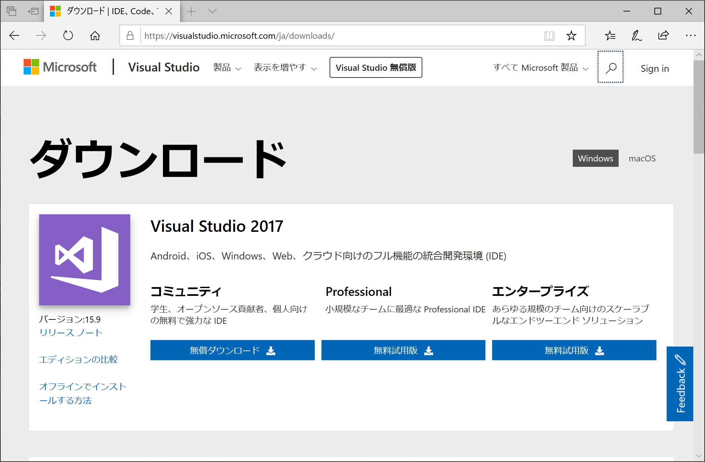
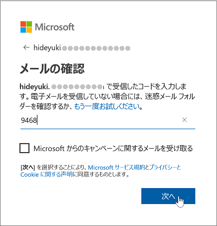

<!DOCTYPE html>
<html xmlns="http://www.w3.org/1999/xhtml" lang="" xml:lang="">
<head>
  <meta charset="utf-8" />
  <meta name="generator" content="pandoc" />
  <meta name="viewport" content="width=device-width, initial-scale=1.0, user-scalable=yes" />
  <title>install</title>
  <style type="text/css">
      code{white-space: pre-wrap;}
      span.smallcaps{font-variant: small-caps;}
      span.underline{text-decoration: underline;}
      div.column{display: inline-block; vertical-align: top; width: 50%;}
  </style>
  <link rel="stylesheet" href="csbook.css">
  <!--[if lt IE 9]>
    <script src="//cdnjs.cloudflare.com/ajax/libs/html5shiv/3.7.3/html5shiv-printshiv.min.js"></script>
  <![endif]-->
</head>
<body>
<h1 id="visual-studio-community-2017-のインストール手順">Visual Studio Community 2017 のインストール手順</h1>
<h2 id="はじめに">はじめに</h2>
<p>本手順は、書籍『新・標準プログラマーズライブラリ なるほどなっとくC#入門』(技術評論社)の読者のための補助資料として公開するものです。</p>
<p>本文では説明できなかった、Visual Studio Community 2017 のインストール方法について説明しています。</p>
<p>Visual Studio Community 2017は個人開発者や教育、学術研究用に無償で提供されるソフトウェアです。商用利用においては制限がありますので、<a href="https://visualstudio.microsoft.com/ja/license-terms/mlt553321/" target="_blank">ライセンス条項</a>をお確かめの上、インストールしてください。</p>
<h2 id="visual-studioインストール用プログラムをダウンロードし起動する">Visual Studioインストール用プログラムをダウンロードし起動する</h2>
<ol type="1">
<li><p>以下のページにアクセスします。</p>
<p><a href="https://visualstudio.microsoft.com/ja/downloads" target="_blank">Visual Studio Downloads</a></p></li>
<li><p>ダウンロードページの「コミュニティ」欄の[無償ダウンロード]ボタンをクリックします。</p>
<p></p>
<p>例えば、Edgeの場合は、以下のようなダイアログが表示されますので、[保存]を選択し、プログラムをディスクに保存します。</p>
<p></p></li>
<li><p>ファイルをダウンロードしたら、ダウンロードしたプログラムを実行します。例えば、Edgeの場合は、以下のようなダイアログが表示されますので、[実行]を選択します。</p>
<p></p></li>
</ol>
<h2 id="visual-studioのインストールを開始する">Visual Studioのインストールを開始する</h2>
<ol start="4" type="1">
<li><p>ユーザーアカウント制御のダイアログが表示された場合は、[はい]をクリックします。</p>
<p></p></li>
<li><p>「プライバシーに関する声明」と「Microsoftソフトウェアのライセンス条項」の確認を求められますので、確認した後、[続行]ボタンをクリックします。</p>
<p></p></li>
<li><p>Visual Studio Installerのダウンロードとインストールが開始されます。</p>
<p></p></li>
</ol>
<h2 id="ワークロードを選択する">ワークロードを選択する</h2>
<ol start="7" type="1">
<li><p>インストーラーが起動すると、ワークロードの選択画面が表示されます。この画面で、Visual Studioでどのような開発を行うかを指定します。</p>
<p></p>
<p>例えば、Windows用のデスクトップアプリケーションの開発を行うならば「.NET デスクトップ開発」をチェックします。Webアプリケーションの開発を行う場合は「ASP.NETとWeb開発」をチェックします。ワークロードは複数選択することが可能です。</p>
<p>なお、書籍『新・標準プログラマーズライブラリ なるほどなっとくC#入門』に掲載されているプログラムコードを動かすには、「.NET デスクトップ開発」にチェックを入れてください。このワークロードはインストール後に追加することもできます<a href="#fn1" class="footnote-ref" id="fnref1"><sup>1</sup></a>。</p></li>
<li><p>必要なワークロードを選択したら、画面右下の[インストール]ボタンをクリックします。</p>
<p></p></li>
<li><p>インストールか開始されます。Visual Studio のインストールの進行状況が示されます。インストールに要する時間は、選択するワークロードの数、コンピュータの性能、ネットワークの回線速度などにより異なってきます。環境によってはインストールに1時間以上かかる場合もあります。</p>
<p></p></li>
</ol>
<h2 id="visual-studio-にサインインする">Visual Studio にサインインする</h2>
<ol start="10" type="1">
<li><p>インストールが完了すると、自動的にVisual Studio が起動し「ようこそ」の画面が表示されます。</p>
<p></p>
<p>Microsoftアカウントをお持ちの方は、[サインイン]ボタンを押して、サインインして15へ進んでください。</p>
<p>Microsoftアカウントをお持ちで無い方は、[サインアップ]のリンクをクリックしてください。</p></li>
<li><p>アカウント作成のウィンドウが表示されますので、ここで、あなたのメールアドレスを入力し、[次へ]ボタンをクリックします。</p>
<p></p></li>
<li><p>次にパスワード作成のウインドウで、Microsoftアカウントのパスワードを入力し、[次へ]ボタンをクリックします。</p>
<p></p></li>
<li><p>11で入力したメールアドレスにメールが届きます。メールに記載されている確認コードを入力し、[次へ]ボタンをクリックします。</p>
<p></p></li>
<li><p>アカウントの作成ウインドウが表示されます。画像に表示されている英数字の文字を入力欄に入力し、[次へ]ボタンをクリックします。</p>
<p></p></li>
<li><p>サインインが完了すると、下記のウインドウが表示されます。配色テーマの選択をし、[Visual Studioの開始]ボタンをクリックします。</p>
<p></p></li>
<li><p>Visual Studioが起動し、C#での開発が行えるようになります。</p>
<p></p></li>
</ol>
<p>以上でインストールは完了です。</p>
<section class="footnotes">
<hr />
<ol>
<li id="fn1"><p>ワークロードを後から追加するには、スタートメニューから[Visual Studio インストーラー]を開きます。 ここで、インストールするワークロードを選択し[変更]をクリックします。<a href="#fnref1" class="footnote-back">↩</a></p></li>
</ol>
</section>
</body>
</html>
